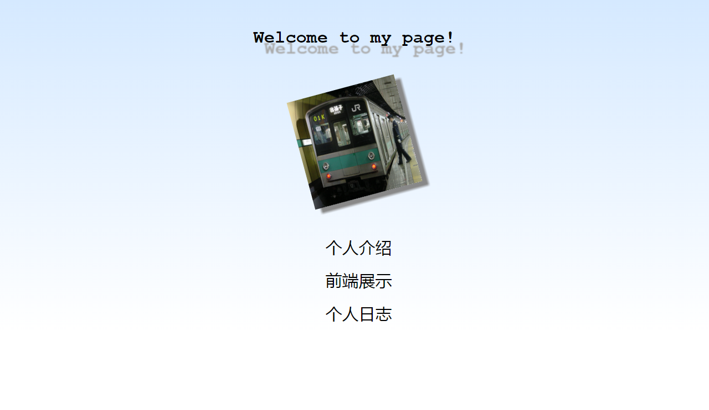

七月
7
2015
第一次日志
在这次课之前，我对前端的理解为：美工们用PS等工具画画画，然后程序员照着设计图把文字图片放在给定的位置
所以经过一次实战，我发现：美工的工作真的很重要！没有艺术细菌，企图设计一个漂亮的网页是一件很不容易的事情。在很多细节上，比如边栏的配色，正文字体大小和图片嵌入方式等等都需要很深的考量。如果考虑不够，就可能出现下面这个失败。。。
不过，在CSS入门阶段，多重继承引起的样式定位困难也是一个重要的问题。此外还有很多语法上的“坑”。与C++、java等语法学习不同，我们很难知道一个代码在系统中最终执行的方式，因此与学习一个闭源的库相似。而且，尽管C++编译器多种多样，但总体上语法一致，不一样的部分极少用到。而HTML/CSS浏览器种类繁多，语法标准发展迅速，跨平台成为很重要的问题。
本门课程的学习，个人以为“排雷”很重要。虽然网上有详尽的语法手册，也有一些问题的通用解决方案，但实际遇到的一些问题（有些甚至难以找到解释，或者与特定浏览器相关）解决起来仍然费时费力。我们不可能记住每一个标签，但对通用解决策略有一定了解后，遇到BUG时能有方向性地从网上查询资料，节约时间。
七月
7
2015
第一次日志补
测试用例：
打东边来了个喇嘛，
手里拎着个挞嘛，
打西边来了个哑巴，
腰里别着个喇叭，
别着喇叭的要用喇叭换手里拎着挞嘛的哑巴的挞嘛，
拎着挞嘛的哑巴不愿意用挞嘛换手里拎着喇叭的喇嘛的喇叭。
拎着喇叭的喇嘛用喇叭打了拎着挞嘛的哑巴，
拎着挞嘛的哑巴也用挞嘛打了拎着喇叭的喇嘛。